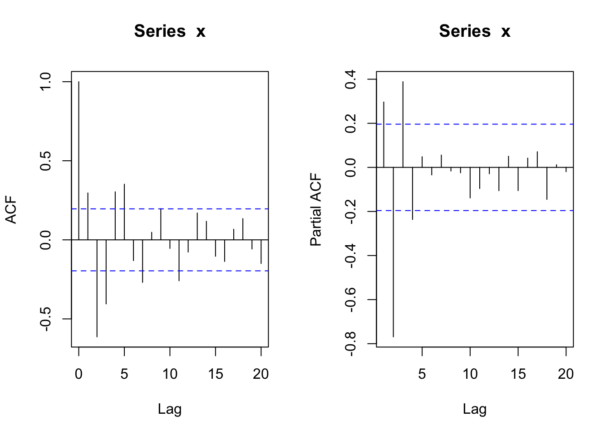
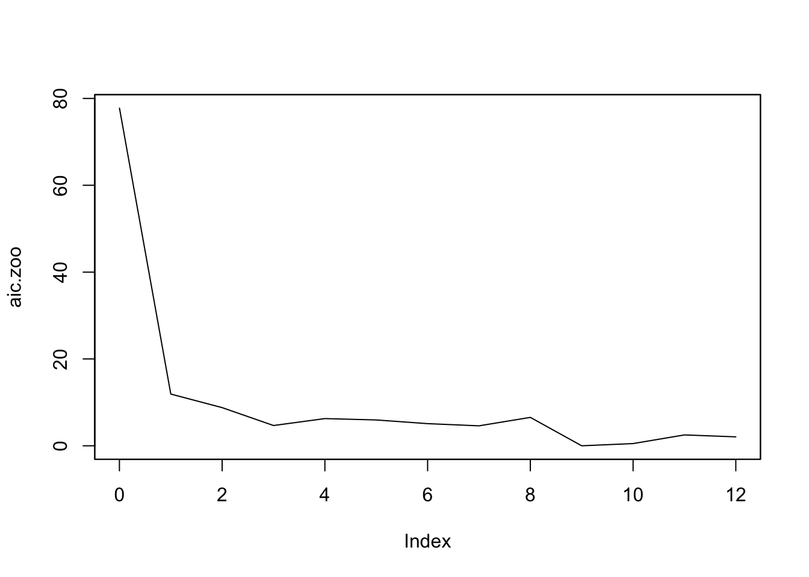

3 ARMA\((p,q)\)モデル
3.1 ARMA\((p,q)\)モデルとは
- 定常, かつ
- 次の差分方程式を満たす\({X_t}\):
\[ X_t - \phi_1 X_{t-1} - \cdots - \phi_p X_{t-p}= Z_t + \theta_1 X_{t-1} + \cdots + \theta_q Z_{t-q} \tag{1}\] コンパクトな代替表現: \[ \phi(B)X_t = \theta(B) Z_t \tag{2}\]
- Backward shift operator \(B\)
- AR多項式 \(\phi(z)=1 - \phi_1 z - \cdots - \phi_p z^p\)
- MA多項式 \(\theta(z)=1 + \theta_1 z + \cdots + \theta_q z^q\)
因果性と反転可能性
- 差分方程式の解\({X_t}\)
形式的に解くと, \[ X_t = \frac{\theta(B)}{\phi(B)} Z_t \tag{3}\] 解が存在 (定常, 因果的) するための条件?
- 定常性: \(\phi(z) \ne 0,\ \forall |z|=1\)
- 因果性: \(\phi(z) \ne 0,\ \forall |z|\le 1\)
- +反転可能性: \(\theta(z) \ne 0,\ \forall |z|\le 1\)
※ \(\phi(z)=0, \theta(z)=0\)は共通根を持たない (識別可能性)
※ 因果性は実用上不可欠: \(X_t = \sum_{i=0}^{\infty}\psi_i Z_{t-i}\) (with \(\sum_{i=0}^{\infty}|\psi_i|<\infty\)) (MA\((\infty)\)表現)
※ 反転可能性は推定のために付加する条件: \(Z_t = \sum_{i=0}^{\infty}\pi_i X_{t-i}\) (with \(\sum_{i=0}^{\infty}|\pi_i|<\infty\)) (AR\((\infty)\)表現)
3.2 ARMA\((p,q)\)モデルによる予測
- 過去データ\(X_t,X_{t-1},\cdots,X_1\)に基づき, \(h\)期先の値\(X_{t+h}\)を予測したい
- モデルを推定 → 推定モデルを使って予測
- どのように予測するか?
- 定常過程の予測 (当然, ARMA\((p,q)\)過程を含む)
- 線形予測 (Best Linear Prediction)
- 線形回帰問題を解く(正規方程式の解)
- AR\((p)\)モデル → \(\phi\)係数をそのまま予測に使用
- 一般的解法 (MA\((q)\), ARMA\((p,q)\)モデル等にも適用): アルゴリズムによる予測(Duribin-Levinsonアルゴリズム, Innovationアルゴリズム)
3.3 ARMA\((p,q)\)モデルの推定
- モデルをどのように推定するか?
- 次数\(p,q\)の同定(identification) (モデル選択)
- モデルパラメータ\(\phi\) , \(\theta\)の推定
- 予備的な推定 (→ 最尤法の初期値に利用可能)
- AR\((p)\)モデルのみ: Yule-Walker法, Burg法
- MA\((q)\), ARMA\((p,q)\)モデル: Innovationアルゴリズム, Hannan-Rissanenアルゴリズム等
- 最尤法
- 標準的には, \(Z_t\)が正規ホワイトノイズ (IID + 正規分布)
- → \(X_t\)は, Gaussian過程
- \(Z_t\)が非正規のIIDノイズの場合でも, 大標本ならば使用OK
- 標準的には, \(Z_t\)が正規ホワイトノイズ (IID + 正規分布)
- モデル診断
- 適合モデルから得られた残差系列がホワイトノイズか?
- 時系列プロット, 標本ACFプロット
- 自己相関の検定, かばん検定
- 正規性検定 (qqプロット, Jarque-Bera検定など)
- 適合モデルから得られた残差系列がホワイトノイズか?
- 参考文献: Brockwell and Davis, Introduction to Time Series and Forecasting.
3.4 ARMA\((p,q)\)モデルの同定 (次数の特定)
- 標本自己相関(ACF), 標本偏自己相関(PACF)の使用
- 定常過程は, ACVF/ACFによって特徴付けられる
- →時系列データから標本SACFをプロット
- AR\((p)\) → PACFが\((p+1)\)次以降のラグが値\(0\)
- MA\((q)\) → ACFが\((q+1)\)次以降のラグが値\(0\)
- ARMA\((p,q)\) →Extended ACF(EACF)の表内で, “○”(値が有意でない)の領域中で最も左上の要素の位置(行\(p\),列\(q\))を見つける
- AIC, BICなどのモデル選択基準の使用
- モデル推定と同時に行う
- モデル選択基準 = - 2・対数尤度 + 罰則項(パラメータ数の増加関数)
3.5 Rによる実行例
3.5.1 ARMA\((p,q)\)モデルの同定 (ACF/PACF/EACFの利用)
- AR(3)モデル
#par(mfrow = c(3,1))
Tlen = 100
phi=c(0.5,-0.8, 0.5); theta = NULL
set.seed(10)
x = arima.sim(n = Tlen, model = list(order = c(3,0,0), ar = phi, ma = theta))
#plot(x, type = "l") # 時系列プロット
par(mfrow = c(1,2))
acf(x) # 自己相関(ACF)
pacf(x) # 偏自己相関(PACF)- MA(2)モデル
phi = NULL; theta=c(0.3,0.4)
set.seed(10)
x = arima.sim(n = Tlen, model = list(order = c(0,0,2), ar = phi, ma = theta))
#plot(x, type = "l") # 時系列プロット
par(mfrow = c(1,2))
acf(x) # 自己相関(ACF)
pacf(x) # 偏自己相関(PACF)- ARMA(2,1)モデル
phi = c(0.3,-0.8); theta = 0.9
set.seed(10)
x = arima.sim(n = Tlen, model = list(order = c(2,0,1), ar = phi, ma = theta))
#plot(x, type="l") # 時系列プロット
par(mfrow = c(1,2))
acf(x) # 自己相関(ACF)
pacf(x) # 偏自己相関(PACF)
## Loading required package: TSA##
## Attaching package: 'TSA'## The following objects are masked from 'package:stats':
##
## acf, arima## The following object is masked from 'package:utils':
##
## tar## AR/MA
## 0 1 2 3 4 5 6 7 8
## 0 x x x x x o x o o
## 1 x x x x x x x o o
## 2 x o o o o o o o o
## 3 x o o o o o o o o
## 4 x x x o o o o o o
## 5 x o x o o o o o o
## 6 x o o o o o o o o## [,1] [,2] [,3] [,4] [,5] [,6] [,7] [,8] [,9]
## [1,] 0.30 -0.613 -0.41 0.304 0.3518 -0.131 -0.269 0.048 0.197
## [2,] 0.34 -0.767 -0.43 0.462 0.3388 -0.214 -0.250 0.088 0.182
## [3,] 0.50 -0.021 -0.13 -0.135 -0.0102 0.053 0.033 -0.095 -0.205
## [4,] 0.51 -0.097 -0.11 -0.140 -0.0241 0.116 0.031 -0.062 -0.183
## [5,] 0.26 -0.364 0.40 -0.137 -0.0169 -0.032 0.012 -0.078 -0.104
## [6,] 0.47 -0.028 0.23 -0.162 0.0055 -0.045 0.055 -0.055 -0.114
## [7,] 0.49 0.052 0.17 -0.067 -0.1727 -0.019 0.038 -0.070 -0.059→ EACFは\((p,q)=(2,1)\)を示唆.
3.5.2 ARMA\((p,q)\)モデルの推定・診断
- 仮に\((p,q)=(2,2)\)を選んだとすると,
##
## Call:
## arima(x = x, order = c(2, 0, 2))
##
## Coefficients:
## ar1 ar2 ma1 ma2 intercept
## 0.3556 -0.7777 0.8059 -0.0712 -0.0247
## s.e. 0.0887 0.0687 0.1279 0.1353 0.1187
##
## sigma^2 estimated as 0.9372: log likelihood = -140.93, aic = 291.87##
## Call:
## arima(x = x, order = c(2, 0, 2), fixed = c(NA, NA, NA, 0, NA))
##
## Coefficients:
## ar1 ar2 ma1 ma2 intercept
## 0.3270 -0.7772 0.8604 0 -0.0260
## s.e. 0.0706 0.0691 0.0802 0 0.1249
##
## sigma^2 estimated as 0.9407: log likelihood = -141.07, aic = 290.15##
## Box-Ljung test
##
## data: x.fit2$residuals
## X-squared = 13.785, df = 20, p-value = 0.84123.5.3 パッケージ{forecast}の利用
- モデルの自動選択・推定
## Loading required package: forecast## Registered S3 method overwritten by 'quantmod':
## method from
## as.zoo.data.frame zoo## Registered S3 methods overwritten by 'forecast':
## method from
## fitted.Arima TSA
## plot.Arima TSA## Series: x
## ARIMA(2,0,1) with zero mean
##
## Coefficients:
## ar1 ar2 ma1
## 0.3273 -0.7773 0.8606
## s.e. 0.0706 0.0691 0.0801
##
## sigma^2 = 0.9702: log likelihood = -141.1
## AIC=290.19 AICc=290.61 BIC=300.61- 推定モデルを使った予測
## Point Forecast Lo 80 Hi 80 Lo 95 Hi 95
## 101 4.8076600 3.5453579 6.0699620 2.8771355 6.7381844
## 102 3.2942800 1.3342557 5.2543043 0.2966815 6.2918785
## 103 -2.6587345 -4.6791846 -0.6382845 -5.7487463 0.4312772
## 104 -3.4306758 -5.8473695 -1.0139821 -7.1266899 0.2653382
## 105 0.9437980 -1.4734713 3.3610674 -2.7530964 4.6406925
## 106 2.9754436 0.3543532 5.5965340 -1.0331682 6.9840554
## 107 0.2401888 -2.4072595 2.8876371 -3.8087340 4.2891116
## 108 -2.2341203 -4.9639829 0.4957423 -6.4090848 1.9408442
## 109 -0.9178543 -3.6944931 1.8587845 -5.1643569 3.3286483
## 110 1.4361307 -1.3626481 4.2349096 -2.8442321 5.7164936
## 111 1.1834256 -1.6613440 4.0281953 -3.1672741 5.5341253
## 112 -0.7289626 -3.5757196 2.1177945 -5.0827018 3.6247766
## 113 -1.1584110 -4.0375796 1.7207575 -5.5617193 3.2448973
## 114 0.1874876 -2.6922716 3.0672467 -4.2167240 4.5916991
## 115 0.9617589 -1.9352597 3.8587775 -3.4688487 5.3923665
## 116 0.1690270 -2.7318039 3.0698578 -4.2674110 4.6054649
## 117 -0.6922301 -3.5997273 2.2152671 -5.1388633 3.7544032
## 118 -0.3579265 -3.2709875 2.5551344 -4.8130688 4.0972157
## 119 0.4209117 -2.4936672 3.3354906 -4.0365521 4.8783755
## 120 0.4159582 -2.5036126 3.3355289 -4.0491400 4.8810563
3.6 ARMAモデル: データ分析例 (Tsay, Ch2)
- 出所: Tsay, Ch.2 (一部改変)
3.6.1 標本ACF
- pp.46–47
- Example 2.1
ifl <- file.path(dir_introTS, "m-dec12910.txt")
da = read.table(ifl, header=T)
#da = read.table("m-dec12910.txt", header = T)
head(da)## date dec1 dec2 dec9 dec10
## 1 19670131 0.068568 0.080373 0.180843 0.211806
## 2 19670228 0.008735 0.011044 0.048767 0.064911
## 3 19670331 0.039698 0.035364 0.067494 0.068904
## 4 19670428 0.044030 0.037541 0.040785 0.044602
## 5 19670531 -0.050631 -0.036233 -0.002191 0.000295
## 6 19670630 0.014998 0.018870 0.102075 0.118678d10 = da$dec10 # select the Decile 10 returns
dec10 = ts(d10, frequency = 12, start = c(1967, 1))
par(mfcol = c(2, 1))
plot(dec10, xlab = 'year', ylab = 'returns')
# matplot(da[, -1], type = "l")
title(main = '(a): Simple returns')## , , 1
##
## [,1]
## [1,] 1.000000000
## [2,] 0.227386585
## [3,] -0.019026447
## [4,] -0.021258247
## [5,] 0.011011345
## [6,] 0.002676057
## [7,] -0.027654887
## [8,] -0.016910608
## [9,] -0.049183690
## [10,] -0.039617756
## [11,] 0.013265549
## [12,] 0.061013220
## [13,] 0.130411045
## [14,] -0.036881195
## [15,] -0.082462743
## [16,] -0.020950139
## [17,] 0.016726386
## [18,] -0.013961209
## [19,] -0.059422809
## [20,] -0.082246074
## [21,] -0.063641596
## [22,] -0.039858376
## [23,] 0.017770989
## [24,] -0.015413528
## [25,] 0.052212082# (tt = f1$acf[13] * sqrt(516)) # nrow(da) = 516
(tt = f1$acf[13] * sqrt(length(d10))) # 絶対値の大きいh = 13でのt値## [1] 2.962369- Ljung-Box Q statistics
- P.48, Example 2.2
ifl <- file.path(dir_introTS, "m-ibmsp6709.txt")
da = read.table(ifl, header=T)
#da = read.table("m-ibmsp6709.txt", header = T)
ibm = da$ibm
lnibm = log(ibm + 1) # Transfer to log returns
Box.test(ibm, lag = 12, type = 'Ljung')##
## Box-Ljung test
##
## data: ibm
## X-squared = 7.5666, df = 12, p-value = 0.818##
## Box-Ljung test
##
## data: lnibm
## X-squared = 7.4042, df = 12, p-value = 0.82983.6.2 AR, MA, ARMA (2.4–2.6)
- p.58, Example 2.3
- GNP, 1947.Q1–2010.Q1
par(mfrow = c(1, 1))
ifl <- file.path(dir_introTS, "q-gnp4710.txt")
da = read.table(ifl, header=T)
#da = read.table("q-gnp4710.txt", header = T)
head(da); tail(da); nrow(da)## Year Mon Dat VALUE
## 1 1947 1 1 238.1
## 2 1947 4 1 241.5
## 3 1947 7 1 245.6
## 4 1947 10 1 255.6
## 5 1948 1 1 261.7
## 6 1948 4 1 268.7## Year Mon Dat VALUE
## 248 2008 10 1 14317.2
## 249 2009 1 1 14172.2
## 250 2009 4 1 14164.2
## 251 2009 7 1 14281.9
## 252 2009 10 1 14442.8
## 253 2010 1 1 14637.6## [1] 253## [1] 253 4#tdx = c(1:253) / 4 + 1947 # create the time index
tdx = c(1:length(G)) / 4 + 1947 # 1947スタート, 四半期データ
par(mfcol = c(2, 1))
plot(tdx, G, xlab = 'year', ylab = 'GNP', type = 'l')
#plot(tdx[2:253], gnp, type = 'l', xlab = 'year', ylab = 'growth')
plot(tdx[-1], gnp, type = 'l', xlab = 'year', ylab = 'growth') # 

- arima(): 一変量arimaモデルの適合 (次数order, 分析者が指定)
##
## Call:
## arima(x = gnp, order = c(3, 0, 0))
##
## Coefficients:
## ar1 ar2 ar3 intercept
## 0.4386 0.2063 -0.1559 0.0163
## s.e. 0.0620 0.0666 0.0626 0.0012
##
## sigma^2 estimated as 9.549e-05: log likelihood = 808.56, aic = -1607.12p1 = c(1, -m1$coef[1:3]) # set-up the polynomial (AR係数)
(r1 = polyroot(p1)) # solve the polynomial equation (AR特性方程式の解)## [1] 1.616116+0.864212i -1.909216+0.000000i 1.616116-0.864212i## [1] 1.832674 1.909216 1.832674## [1] 12.79523- (参考) zooクラスにして実行した場合
##
## Attaching package: 'zoo'## The following objects are masked from 'package:base':
##
## as.Date, as.Date.numeric
# Q statistic: based on lag autocorrelation coefficients
Box.test(m1.zoo$residuals, lag = 1, type = "Ljung-Box") ##
## Box-Ljung test
##
## data: m1.zoo$residuals
## X-squared = 0.0071647, df = 1, p-value = 0.9325##
## Box-Ljung test
##
## data: m1.zoo$residuals
## X-squared = 6.1525, df = 5, p-value = 0.2917##
## Box-Ljung test
##
## data: m1.zoo$residuals
## X-squared = 20.844, df = 12, p-value = 0.05271- p.63
mm1 = ar(gnp, method = 'mle') # yule-walker(デフォルト), burg, ols, yw
# aic = T (デフォルト) --> 次数選択実行
mm1$order # Find the identified order ## [1] 9## [1] "order" "ar" "var.pred" "x.mean" "aic"
## [6] "n.used" "n.obs" "order.max" "partialacf" "resid"
## [11] "method" "series" "frequency" "call" "asy.var.coef"## 0 1 2 3 4 5 6 7 8 9 10
## 77.767 11.915 8.792 4.669 6.265 5.950 5.101 4.596 6.541 0.000 0.509
## 11 12
## 2.504 2.057## [1] 13
# RK: In ar.yw the variance matrix of the innovations is computed from the fitted coefficients and the autocovariance of x.- (参考) zooクラス利用の場合

- table 2.1 (p.61)の例, Value-weighted Index
# AR係数は小さいが有意. 定数項の有意性⇒期待値非ゼロ?
#vw = read.table('m-ibm3dx.txt', header = T)[, 3]
ifl <- file.path(dir_introTS, 'm-ibm3dx2608.txt')
vw = read.table(ifl, header=T)[, 3]
ar(vw, method = "mle") # demean = T##
## Call:
## ar(x = vw, method = "mle")
##
## Coefficients:
## 1 2 3 4 5 6 7 8
## 0.1167 -0.0112 -0.1126 0.0217 0.0735 -0.0452 0.0254 0.0462
## 9
## 0.0660
##
## Order selected 9 sigma^2 estimated as 0.002831## [1] 1592.953## [1] 0.09290084#tmp <- ar(vw, method = "mle")
# tmp$ar / sqrt(diag(tmp$asy))
(m3 = arima(vw, order = c(3, 0, 0))) # include.mean = T (デフォルト)##
## Call:
## arima(x = vw, order = c(3, 0, 0))
##
## Coefficients:
## ar1 ar2 ar3 intercept
## 0.1158 -0.0187 -0.1042 0.0089
## s.e. 0.0315 0.0317 0.0317 0.0017
##
## sigma^2 estimated as 0.002875: log likelihood = 1500.86, aic = -2991.73## [1] 0.008967611## [1] 0.0536189##
## Box-Ljung test
##
## data: m3$residuals
## X-squared = 16.352, df = 12, p-value = 0.1756## [1] 0.05992276# ← カイ2乗分布の自由度12-3 = 9(AR多項式の次数p = 3)
(m3 = arima(vw, order = c(3, 0, 0), fixed = c(NA, 0, NA, NA)))## Warning in arima(vw, order = c(3, 0, 0), fixed = c(NA, 0, NA, NA)): some AR
## parameters were fixed: setting transform.pars = FALSE##
## Call:
## arima(x = vw, order = c(3, 0, 0), fixed = c(NA, 0, NA, NA))
##
## Coefficients:
## ar1 ar2 ar3 intercept
## 0.1136 0 -0.1063 0.0089
## s.e. 0.0313 0 0.0315 0.0017
##
## sigma^2 estimated as 0.002876: log likelihood = 1500.69, aic = -2993.38## [1] 0.00883503## [1] 0.05362832##
## Box-Ljung test
##
## data: m3$residuals
## X-squared = 16.828, df = 12, p-value = 0.1562## [1] 0.07821131- p.77
## date ibmrtn vwrtn ewrtn sprtn
## 1 19260130 -0.010381 0.000724 0.023174 0.022472
## 2 19260227 -0.024476 -0.033374 -0.053510 -0.043956
## 3 19260331 -0.115591 -0.064341 -0.096824 -0.059113
## 4 19260430 0.089783 0.038358 0.032946 0.022688
## 5 19260528 0.036932 0.012172 0.001035 0.007679
## 6 19260630 0.068493 0.056888 0.050487 0.043184##
## Call:
## arima(x = ew, order = c(0, 0, 9))
##
## Coefficients:
## ma1 ma2 ma3 ma4 ma5 ma6 ma7 ma8
## 0.2144 0.0374 -0.1203 -0.0425 0.0232 -0.0302 0.0482 -0.0276
## s.e. 0.0316 0.0321 0.0328 0.0336 0.0319 0.0318 0.0364 0.0354
## ma9 intercept
## 0.1350 0.0122
## s.e. 0.0323 0.0028
##
## sigma^2 estimated as 0.005043: log likelihood = 1220.86, aic = -2419.72# --> 有意でない係数 = 0を指定
(m1 = arima(ew, order = c(0, 0, 9), fixed = c(NA, 0, NA, 0, 0, 0, 0, 0, NA, NA)))##
## Call:
## arima(x = ew, order = c(0, 0, 9), fixed = c(NA, 0, NA, 0, 0, 0, 0, 0, NA, NA))
##
## Coefficients:
## ma1 ma2 ma3 ma4 ma5 ma6 ma7 ma8 ma9 intercept
## 0.1909 0 -0.1199 0 0 0 0 0 0.1227 0.0122
## s.e. 0.0293 0 0.0338 0 0 0 0 0 0.0312 0.0027
##
## sigma^2 estimated as 0.005097: log likelihood = 1215.61, aic = -2421.22## [1] 0.07139328##
## Box-Ljung test
##
## data: m1$residuals
## X-squared = 17.604, df = 12, p-value = 0.1283## [1] 0.04010828# ← カイ2乗分布の自由度12-3 = 9(AR多項式の次数p = 3)
# Out-of-sample prediction
(m1 = arima(ew[1:986], order = c(0, 0, 9), fixed = c(NA, 0, NA, 0, 0, 0, 0, 0, NA, NA)))##
## Call:
## arima(x = ew[1:986], order = c(0, 0, 9), fixed = c(NA, 0, NA, 0, 0, 0, 0, 0,
## NA, NA))
##
## Coefficients:
## ma1 ma2 ma3 ma4 ma5 ma6 ma7 ma8 ma9 intercept
## 0.1844 0 -0.1206 0 0 0 0 0 0.1218 0.0128
## s.e. 0.0295 0 0.0338 0 0 0 0 0 0.0312 0.0027
##
## sigma^2 estimated as 0.005066: log likelihood = 1206.44, aic = -2402.88## $pred
## Time Series:
## Start = 987
## End = 996
## Frequency = 1
## [1] 0.004282626 0.013558874 0.015024191 0.014453445 0.012046343 0.001805558
## [7] 0.012211538 0.005514814 0.008513456 0.012791824
##
## $se
## Time Series:
## Start = 987
## End = 996
## Frequency = 1
## [1] 0.07117456 0.07237493 0.07237493 0.07288176 0.07288176 0.07288176
## [7] 0.07288176 0.07288176 0.07288176 0.07339566- EACF table
## date rtn
## 1 19460228 -0.077922
## 2 19460330 0.018592
## 3 19460430 -0.100000
## 4 19460531 0.209877
## 5 19460628 0.005128
## 6 19460731 0.076531##
## Attaching package: 'TSA'## The following objects are masked from 'package:stats':
##
## acf, arima## The following object is masked from 'package:utils':
##
## tar## AR/MA
## 0 1 2 3 4 5 6 7 8 9 10 11 12
## 0 o o x o o x o o o x o x o
## 1 x o x o o x o o o o o x o
## 2 x x x o o x o o o o o o o
## 3 x x x o o o o o o o o o o
## 4 x o x o o o o o o o o o o
## 5 x x x o x o o o o o o o o
## 6 x x x x x o o o o o o o o## [,1] [,2] [,3] [,4] [,5] [,6] [,7] [,8] [,9]
## [1,] -0.056 -0.0380 -0.082 -0.0046 0.01774 0.0821 0.0080 0.0127 -0.03014
## [2,] -0.474 0.0096 -0.074 -0.0209 0.00196 0.0772 -0.0288 0.0026 -0.00683
## [3,] -0.383 -0.3476 -0.074 0.0160 -0.00553 0.0772 0.0269 0.0120 0.00045
## [4,] -0.177 0.1381 0.384 -0.0224 0.00232 0.0419 -0.0232 0.0154 -0.00440
## [5,] 0.421 0.0287 0.454 -0.0079 0.00071 0.0025 -0.0140 0.0305 0.01159
## [6,] -0.114 0.2135 0.449 0.0096 0.20242 -0.0063 -0.0038 0.0403 -0.01294
## [7,] -0.208 -0.2504 0.243 0.3111 0.16745 -0.0388 -0.0034 0.0429 -0.01009
## [,10] [,11] [,12] [,13]
## [1,] -0.0778 0.0488 0.0909 -0.011
## [2,] -0.0694 0.0372 0.0938 -0.024
## [3,] -0.0268 0.0221 0.0428 0.042
## [4,] -0.0254 0.0185 0.0100 0.043
## [5,] 0.0042 0.0191 -0.0043 0.013
## [6,] -0.0123 0.0315 0.0117 0.028
## [7,] -0.0260 0.0078 0.0106 0.037